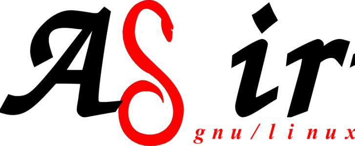

2. GNU/Linux [GNU_Linux]¶
| [GNU_Linux] | http://www.gnu.org/gnu/linux-and-gnu.html |
每天都有许多计算机用户使用一个被改动过的GNU系统，但是他们并没有意识到。经过一系列的事件，现在被广泛使用的GNU版本则经常被称作“Linux”，而且许多用户并不了解它基本上就是GNU系统，是由GNU工程开发的。
Linux确实存在，许多人都在使用它，但它仅仅是所用系统的一部分。Linux是内核：它是为你运行的其他程序分配计算机资源的程序。内核是操作系统的基本部分，但是它自己并无用处；它只能在完整的操作系统框架下才能发挥作用。Linux一般和GNU操作系统一起使用：整个系统基本上就是GNU加上Linux，或叫GNU/Linux。所有被叫做“Linux”的发行版实际上是GNU/Linux发行版。
许多用户并不了解作为内核的Linux和也被称作“Linux”的整个系统的区别。而不加区别地使用该名称并不能帮助人们对此的理解。这些用户常常认为Linus Torvalds在1991年凭借一些帮助完成了整个操作系统的开发。
程序员一般知道Linux是一个内核。但是他们一般也听到整个系统叫“Linux”，他们通常会设想的历史是整个系统要以内核命名。例如，许多人相信一旦Linus Torvalds完成了Linux内核，其用户就搜索一些自由软件来和内核一起工作，此时他们发现（没有特别的原因）构成一个类似Unix系统的大多数必要组件已经有了。
他们的发现不是巧合—它正是还没有全部完成的GNU系统。这些已经完成的自由软件加在一起就构成了完整的系统，因为GNU工程从1984年起就在做这件事。在GNU宣言中，我们已经阐明了开发一个自由的类似Unix的系统的目标，它叫做GNU。GNU工程的初始声明也勾画了GNU系统的一些原始计划。在Linux开始时，GNU几乎已经完成。
大多数自由软件项目以完成某项具体工作为目标。例如，Linus Torvalds编写一个类似Unix的内核（Linux）；Donald Knuth编写一个文本排版软件（TeX）；Bob Scheifler开发一个窗口系统（X Window系统）。测量该工程里各个程序的贡献是一件自然的事情。
如果我们这样测量GNU工程的贡献，我们会得出什么结论？一个CD-ROM提供商发现在他们的“Linux发行版”中，GNU软件占单一最大的比重，大约是整个源代码的28%，其中包括一些关键性主要部件，没有它们，就没有整个系统。Linux自身占大约3%。（这个比例在2008年也差不多：在gNewSense的“主”库中，Linux占1.5%，而GNU包占15%。）所以如果你要根据谁的代码多来命名系统，最合适的单个选择是“GNU”。
但是这不是考虑此问题的最深刻方法。GNU工程过去不是、现在也不是，一个开发专门软件包的项目。它不是一个开发C编译器的工程，不过我们做了。它也不是一个开发文本编辑器的工程，我们也做了。GNU工程是要开发一个完全自由的类似Unix的系统：GNU。
许多人已经为系统中的自由软件作出了重大贡献，他们都应该获得荣誉。但GNU是一个整合系统—而不是一些实用程序集合的原因是，GNU工程的最初目标就是做一个完整系统。我们曾经为完成一个完整的自由系统列了一个所需程序的清单，而且我们系统地寻找、编写、或者征询别人编写清单上的每一个程序。我们编写了关键的但是十分枯燥的(1)主要部件，因为这是系统所必需的。有些系统部件，比如编程工具，自己也变成程序员使用的流行工具，但是我们还编写了许多不是工具的部件(2)。我们甚至还开发了一个国际象棋游戏，叫GNU Chess，因为一个完整的系统也需要游戏。
到了90年代初期，我们曾经把除了内核以外的东西放到一起组成了一个系统。我们也在开始开发一个内核，称为GNU Hurd，运行在Mach1之上。开发这个内核比我们预期的要难得多；GNU Hurd在2001年开始可以稳定工作，但是距离能够为人们正常使用还有很长的路要走。
庆幸的是，我们不必再等Hurd了，因为有了Linux。当Linus Torvalds在1992年使Linux成了自由软件，它填补了GNU系统的一个重要空白。人们可以把Linux和GNU系统结合起来组成一个完整的自由系统—一个带有Linux的GNU系统。换句话说，就是GNU/Linux系统。
把它们组合到一起并不是一个简单的工作。有些GNU部件(3)需要作大量的修改才能适应Linux。把系统集成到一个完整的发行版本中、使之“能够直接安装并工作”也是一项艰巨的工作。它需要考虑如何安装和启动系统—我们那时还未处理此问题，因为我们还没有走到那一步。因此，那些开发了不同的发行版的人们作出了许多重要的工作。但是这些工作的属性是，它们终究会被某些人做的。
GNU工程支持GNU/Linux系统，就象支持其GNU系统一样。FSF为重写与Linux相关的GNU C库提供资金，以至于它们现在可以很好地集成在一起，最新版本的GNU/Linux系统使用当前库而无需修改。FSF也为早期Debian GNU/Linux的开发提供资金。
今天有很多不同的GNU/Linux系统（通常叫做“发行版”）。它们大多数包含了非自由软件—它们的开发者遵循的是和Linux相关的哲学，而不是GNU的哲学。然而，也有完全自由的GNU/Linux发行版。FSF支持和gNewSense发行版相关的电脑及其周边件。
制作一个自由的GNU/Linux发行版不止是剔除非自由软件。现在，常规的Linux版本也带有非自由程序。这些程序会在系统启动时加载到I/O（输入输出）设备，它们以很长的数字形式包含在Linux的“源代码”中。所以，维护自由的GNU/Linux发行版现在承担着维护一个自由版Linux的责任。
无论你是否使用GNU/Linux，请不要含糊不清地使用“Linux”这一名称来混淆大众。Linux是一个内核，是系统的主要基本部件之一。整个系统基本上是GNU系统，加上Linux。如果你说的是这个组合，请称之为“GNU/Linux”。
如果你想为“GNU/Linux”提供参考链接，本页面和http://www.gnu.org/gnu/the-gnu-project.html是好的选择。如果你说的是作为内核的Linux，要为它提供参考链接，http://foldoc.org/linux是一个好的URL。
后记 除了GNU，还有一个独立进行的工程开发了一个自由的类似Unix的操作系统。这个系统是BSD，它是由UC Berkeley开发的。在80年代，BSD还不是自由的，但是它在90年代变成了自由软件。今天，一个自由的操作系统(4)差不多如果不是GNU系统的派生版本，就是BSD系统的派生版本。
人们有时会问BSD是否也是一个GNU的派生版本，像GNU/Linux那样。BSD的开发者受到GNU工程的激励而将他们的代码变成了自由软件，尤其受到来自GNU的活动家的明确吸引和帮助，但是他们的代码和GNU并不重合。BSD系统现在也使用一些GNU程序，正如GNU系统及其派生版使用一些BSD程序一样；然而，整体来看，他们是两个独立发展的不同系统。BSD的开发者并没编写一个内核，并将之添加到GNU系统，进而起个譬如叫GNU/BSD的名字，并不是这个情况。(5)